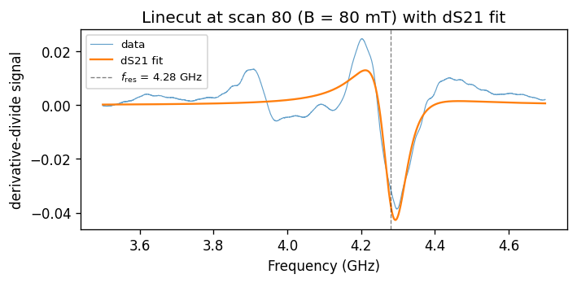

Load
Read LabVIEW-style frequency, S-parameter, reference, and magnetic-field files.
drlib combines broadband ferromagnetic-resonance processing, resonance fitting, coplanar-waveguide field modelling, and magnetic-texture scattering simulation in one focused scientific workflow.



End-to-end workflow
The library is not only a plot collection. Its classes keep measurement arrays, fit parameters, field models, and simulated textures connected through reusable objects.
Read LabVIEW-style frequency, S-parameter, reference, and magnetic-field files.
Choose derivative-divide, finite derivative, or measurement–reference subtraction.
Plot full spectra, crop regions, remove cycling scans, and denoise in Fourier space.
Extract constant-field linecuts and fit one, two, or three resonance modes.
Calculate CPW near fields and their wave-vector excitation spectrum.
Build skyrmion, helical, multidomain, and coexistence textures in q-space.
Main classes
Each class has a clear physical role. The cards below show what is implemented in the current source rather than generic package language.
Measurement ingestion, preprocessing, visualisation, denoising, tracking, and spectrum arithmetic.
getplotzoom_plotzoom_cycle_plotscatter_fitscatter_plotdenoise_spectrumdata_loaderConstant-field extraction, Fourier denoising, model fitting, and fit diagnostics.
get_cutplotdenoisingone_peaktwo_peakthree_peakfitAnalytical near-field and k-space modelling for signal-gap-ground geometries.
get_Bdistributionget_Bspectrumget_KspectrumReal-space magnetic-texture generation and reciprocal-space FFT intensity.
build_gridbuild_skyrmion_mzbuild_helical_multidomain_mzbuild_skyrmion_plus_helical_coexistencecompute_qspaceplotsavefigsummarySpectrum(path, saturation=None, skip_field=1, skip_freq=1, derivative_divide=True, derivative=False, modulation_amp=1, S_param="S21")Initialises the measurement object, loads the selected S-parameter, optionally reduces field/frequency sampling, and chooses the preprocessing route. saturation fixes the saturation field used by later fits; otherwise saturation magnetisation remains a free parameter.
get(skip_field=1, skip_freq=1)Returns the magnetic-field array, scan-index grid, frequency grid, and processed 2-D signal. The output is derivative-divide by default, finite derivative when requested, or measurement minus reference when both derivative flags are false.
B, Field, Freq, S21ddplot(...) and zoom_plot(...)Render the full spectrum or a selected frequency/scan rectangle. Both expose colormap, contrast limits, figure sizing, denoising, tick spacing, and output-file controls.
zoom_cycle_plot(cycle_range, freq_range, scan_range, cycling=False, ...)Plots a selected region and can remove a contiguous block of cycling linecuts before rebuilding the displayed scan axis—useful when measurement protocols include repeated-field segments.
scatter_fit(field_cuts, frequencies, frequencies_end=None)Tracks a resonance through selected scan indices. The fit window may remain fixed or move linearly between start and end frequency ranges. Sequential fits reuse previous parameters.
scatter_plot(field_cuts_list, frequencies_list, ...)Overlays one or more resonance-tracking result sets on the 2-D spectrum. Different point styles can distinguish modes or fitting regions.
denoise_spectrum(fnoise=10)Performs a 2-D FFT, suppresses high-frequency components along the scan direction, and reconstructs a complex denoised spectrum.
spec_a + spec_b, spec_a - spec_b, spec * scalar, spec / scalarCreates a new Spectrum object with transformed signal values. Addition and subtraction require identical 2-D shapes.
Method reference
The detailed reference stays collapsed until needed, so the page remains readable while still documenting the real capabilities.
Frequency-window extraction and resonance fitting at one field-scan index.
Linecut(cut, Spectrum, frequencies=(0, 20e9))Copies the parent spectrum axes and signal, selects a scan index, stores its magnetic field as H0, and extracts the requested frequency interval.
get_cut(denoise=False)Returns the one-dimensional frequency and signal arrays inside the selected interval. Optional denoising applies the linecut FFT filter.
plot(save_name=None, resonances=None, denoise=False, ...)Plots the measured linecut and, when one to three expected resonances are supplied, overlays the corresponding fit. A second denoised plot can also be saved.
denoising(fnoise=20)Suppresses linecut Fourier components above the selected threshold and returns the frequency axis with the reconstructed signal.
one_peak(...) / two_peak(...)Builds one or two prefixed lmfit.Model components from dS21, configures resonance, linewidth, modulation, saturation, and field parameters, then returns the fitted curve and parameters.
three_peak(...)Extends the same model to three resonances. The source labels this path unreliable and recommends tuning initial values close to the expected modes.
fit(model, params_init, details)Denoises the linecut, runs the lmfit optimisation, optionally prints correlations, and returns the real best-fit array, ordered parameter values, and full result object.
Analytical field calculations for a signal line and two ground conductors.
CPW(current, signal_line, gap, ground, thickness)Stores current and waveguide dimensions in SI units. These parameters are reused for all real-space and wave-vector calculations.
get_Bdistribution(distance=210e-9, number_of_points=100000, ...)Calculates in-plane and out-of-plane field profiles at one height above the CPW, plots both components, and draws the metal geometry beneath the curves.
get_Bspectrum(distance_range, number_points_XY, plot="quiver", ...)Builds a two-dimensional field map over lateral position and height. The same vector field can be displayed as quivers, streamlines, contours, or filled contours.
get_Kspectrum(number_of_points=1000, distance=210e-9, ...)Uses FFT_1D to calculate the wave-vector content of the in-plane and/or out-of-plane CPW excitation fields and reports it in µm⁻¹.
Configurable magnetic textures and their simulated reciprocal-space intensity.
REXS2D(N=512, L_um=1.0, pitch_nm=60, ...)Configures grid size, field of view, period, lattice constant, core size, wall width, domain count, orientations, domain smoothing, beam envelope, disorder, and random seed.
build_grid()Creates and caches the real-space x/y axes, two-dimensional meshgrid, and pixel size in micrometres.
build_skyrmion_mz()Generates hexagonal skyrmion lattices, optionally rotates and jitters each domain, blends them through smoothed Voronoi-like masks, and returns m_z(x,y).
build_helical_multidomain_mz(...)Builds independently oriented helical domains. Per-pixel phase noise broadens peaks, while alpha2 and alpha3 add second- and third-order harmonics.
build_skyrmion_plus_helical_coexistence(...)Splits the available domains between skyrmion and helical phases according to f_sk, then combines both textures in real space.
compute_qspace()Subtracts the mean, applies an optional Gaussian coherence envelope and a 2-D Hann window, calculates the shifted FFT, normalises |FFT|², and creates q axes in nm⁻¹.
plot(...) / savefig(path, ...)Displays real-space magnetisation beside log-scaled reciprocal-space intensity, optionally masks the central DC region, and saves the most recently plotted figure.
summary()Prints grid resolution, expected scattering vector, lattice and skyrmion dimensions, and the domain angles used in the current simulation.
Scientific outputs
These examples cover processing, fitting, field modelling, multidomain textures, and phase coexistence rather than leaving large sections as empty summaries.

Compare measurement–reference subtraction, finite derivative, and derivative-divide correction before committing to linecut analysis.
Extract a constant-field cut, denoise it, fit the implemented dS21 model, and keep the fit parameters and report.

Visualise both field components as streamlines, quivers, contours, or filled contours across the waveguide geometry.

Mix independently oriented helical domains, add phase noise or harmonics, and inspect the resulting rotated q-space peaks.

Assign Voronoi-like domains to skyrmion or helical phases and simulate the combined reciprocal-space fingerprint.
Working patterns
The examples below use method names and parameters that exist in the uploaded source snapshot.
The default derivative-divide path removes an important phase/background contribution before fitting.
S_param for the measured scattering channel.modulation_amp for central-difference averaging.style="default" when a custom Matplotlib style is unavailable.from drlib import Spectrum, Linecut
spec = Spectrum(
path=r"C:\data\fmr_measurement",
saturation=200,
skip_field=1,
skip_freq=1,
derivative_divide=True,
modulation_amp=3,
S_param="S21",
)
spec.plot(style="default", c_map="PuOr")
spec.zoom_plot(
freq_range=(3.5e9, 4.8e9),
scan_range=(60, 120),
style="default",
)
cut = Linecut(
cut=80,
Spectrum=spec,
frequencies=(3.5e9, 4.8e9),
)
freq, fit, params, report = cut.one_peak(
resonance=[4.2e9], details=True
)CPW evaluates analytical Biot–Savart expressions for the signal and ground conductors, then transforms the field into k-space.
from drlib import CPW
cpw = CPW(
current=4.5e-3,
signal_line=20e-6,
gap=12e-6,
ground=40e-6,
thickness=200e-9,
)
cpw.get_Bdistribution(
distance=210e-9, style="default"
)
cpw.get_Bspectrum(
distance_range=[-2e-6, 2e-6],
number_points_XY=[800, 100],
plot="streamplot",
style="default",
)
cpw.get_Kspectrum(
distance=210e-9,
IP_excitation=True,
OP_excitation=True,
K_range=[0, 5],
style="default",
)Texture size, lattice density, domain orientation, disorder, beam envelope, and random seed can be controlled independently.
R0_nm and w_nm decouple core size from lattice constant.K controls the number of spatial domains.compute_qspace returns normalised intensity and q axes.from drlib import REXS2D
sim = REXS2D(
N=512, L_um=1.2,
pitch_nm=70, a_nm=70,
R0_nm=15, w_nm=7,
K=3, angles_deg=[0, 12, -10],
domain_smooth_px=14,
use_envelope=True, Lc_um=0.55,
use_jitter=True, jitter_frac=0.015,
seed=7,
)
mz = sim.build_skyrmion_mz()
Iq, qx, qy = sim.compute_qspace()
sim.plot(qmax_nm1=0.18, L_max=0.6)
sim.savefig("skyrmion_rexs.png", dpi=300)
sim.summary()The coexistence builder assigns a fraction of the spatial domains to skyrmion lattices and the remainder to helical textures.
f_sk controls the phase fraction by domain count.sim = REXS2D(
N=512, L_um=1.2, pitch_nm=72,
a_nm=72, K=6, seed=9
)
mz = sim.build_skyrmion_plus_helical_coexistence(
f_sk=0.5,
skyrmion_angles_deg=[0, 12, -10],
helix_angles_deg=[15, 55, 95],
helix_phase_noise_std=0.06,
alpha2=0.08,
alpha3=0.02,
)
sim.compute_qspace()
sim.plot(qmax_nm1=0.18, L_max=0.6)Standalone API
These functions can also be used directly when a full object workflow is unnecessary.
derivative_divide(X, Y, Z, axis=0, modulation_amp=1, average=True)Central difference divided by the local signal, with optional averaging across the modulation width.
derivative(X, Y, Z, axis=0, modulation_amp=1)Finite difference along either axis of a two-dimensional dataset.
dS21(x, A, Psi, fres, Df, mod, Msat, H0)Real derivative-detected FMR line shape used by the Linecut fitting path.
B_BS_analytic(x0, z0, thickness, width, I, direction)Analytical Biot–Savart field of a rectangular conductor for in-plane or out-of-plane components.
FFT_1D(array, dx, zero_pad=None)Shifted one-dimensional FFT with wave-vector axis and wave-vector spacing.
set_size(width, fraction=1)Converts a LaTeX text width in points into a golden-ratio Matplotlib figure size.
read_measurement_txt(file_path)Extracts the first floating-point number from each line of measurement.txt.
timeit(function)Decorator that reports the runtime of plotting, fitting, or processing calls.
indefinite_integral_x(...) / integrand(...)Internal analytical integration steps used to build the CPW field calculation.
Implementation notes
A useful scientific website should document the current limits as carefully as the features.
dS21 fitting.lmfit reports.Lorentzian(...) is currently a placeholder, so the non-derivative fitting branch is not complete.three_peak(...) is explicitly marked unreliable and usually needs carefully tuned initial parameters.Beam requires that custom Matplotlib style; pass style="default" otherwise.Source and tutorial
The repository contains the library source, examples, and project history. This page documents the current source snapshot in a readable form.